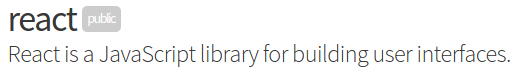
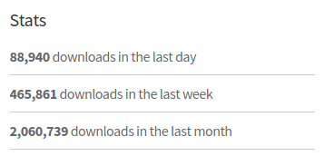
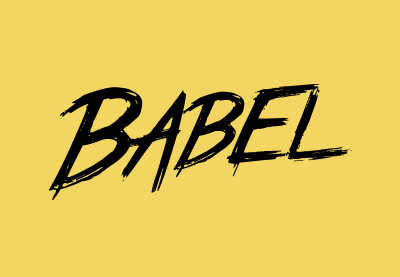
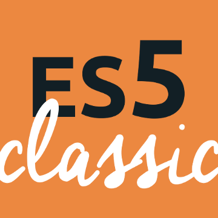

Agenda
- Overordnet React
- Konsepter i React (med oppgaver)
- JSX (med oppgaver)
- State og events (med oppgaver)
- Webpack (med oppgaver, hvis vi rekker)


React overordnet
- Kun view
- Konsist API
- Virtuell DOM
- Komponentbasert

- FilterableProductTable (oransje): inneholder hele eksempelapplikasjonen. Utfører filtrering basert på input.
- SearchBar (blå): mottar input til filtrering
- ProductTable (grønn): viser data
- ProductCategoryRow (turkis): viser en heading for hver kategori
- ProductRow (rød): viser en rad med informasjon om hvert produkt
Konsepter
React.createClass()→ React-komponentReact.createElement()→ React-elementReactDOM.render()- Props
- State
- Events
React.createElement()
React.createElement("div", null, "Hei på deg!");
React.createElement(MyOwnHeaderComponent);
ReactDOM.render()
var myElement = React.createElement(...);
ReactDOM.render(myElement, document.getElementById('my-dom-id'));
Oppgave 1 - Hello world
Skriv en kort statisk tekst til DOM med React
Hint/forslag:
- Ta utgangspunkt i
tasks/task-1/index.htmlfra repoet https://github.com/kmkr/react-ws - Åpne `tasks/task-1/index.html` i en nettleser for å se resultatet
- Dersom du vil se eksempler fra presentasjonen, åpne `open-presentation.html` i en nettleser
React.createElement("div", null, "Hei på deg!")
React.createClass()
var MyComponent = React.createClass({
render: function() {
return React.createElement(...)
}
});
var myElement = React.createElement(MyComponent);
ReactDOM.render(...);
Oppgave 2 - React-komponent
Lag React-komponenten "Header" som inneholder en statisk tekst - f.eks "Hei!"
Hint/forslag:
- Fortsett på forrige oppgave, eller bruk
tasks/task-2/index.html - Definer Header med
React.createClass({ ... }). - Header trenger kun én funksjon:
render() { ... } render()må returnere ett enkelt React-element - gjerne tilsvarende det fra oppgave 1).- Lag en instans av Header med
React.createElement(...) - Render Header til DOM med
ReactDOM.render({ ... })
Props
React.createElement(MyOwnHeaderComponent, {yourName: "Kris-Mikael"});
var MyOwnHeaderComponent = React.createClass({
render: function () {
var name = this.props.yourName;
// ...
}
});
Oppgave 3 - props
Vis "Hei, <ditt navn>!" i stedet for den statiske teksten
Hint/forslag:
- Send med navnet ditt til Header og bruk
this.propsinne i Header til å lese verdien
var MyOwnHeaderComponent = React.createClass({
render: function () {
var name = this.props.yourName;
// ...
}
});
React.createElement(MyOwnHeaderComponent, {yourName: 'Ole Brumm'});
React root
ReactDOM.render(...) krever ett (og kun ett) element
React root - løst med wrapper
var myElem = React.createElement(
'div',
null,
React.createElement('p', null, 'First paragraph'),
React.createElement('p', null, 'Second paragraph')
);
ReactDOM.render(myElem, ...)
Oppgave 4 - Liste over filmer
Lag en ny komponent - MovieList - og render den til DOM
Hint/forslag:
- Innhold i komponenten kan foreløpig være en tom tekst
ReactDOM.render(...)krever én rot-komponent, så for å inkludere både Header og MovieList må de wrappes i f.eks en<div>.
JavaScript i render()
var favoriteHerbs = ['cilantro', 'basil', 'parsley'];
React.createClass({
render: function () {
return React.createElement('ul', null, favoriteHerbs.map(function (herb) {
return React.createElement('li', {key: herb}, herb);
}));
}
});
Oppgave 5
Vis en liste over filmer du liker i MovieList
Hint/forslag:
- Filmlista kan være et hardkodet array i komponenten
- Bruk
.map()til å iterere over arrayet - Bruk
<ul>til lista. Navnet på hver film vises i en<li>.
JSX
var Header = React.createClass({
render: function () {
return React.createElement(
"p",
null,
"Hei " + this.props.yourName
);
}
});
class Header extends React.Component {
render() {
return <p>Hei {this.props.yourName}</p>;
}
}
JSX - innsending av props
class Header extends React.Component {
render() {
return <p>Hei {this.props.yourName}</p>;
}
}
ReactDOM.render(
<Header yourName="Kris-Mikael"/>,
document.getElementById('my-app')
);
JSX - JavaScript i render()
class MyHerbs extends React.Component {
render() {
return (
<ul>
{this.props.herbs.map(function (herb) {
return <li>{herb}</li>;
})}
</ul>
);
}
}
const favoriteHerbs = ['cilantro', 'parsley'];
ReactDOM.render(
<MyHerbs herbs={favoriteHerbs}/>,
document.getElementById('my-app')
);


→

→

Hvordan bruke Babel?
Hvordan bruke Babel?

Hvordan bruke Babel?
- Installer node
- Kjør
npm init - Installer babel med
npm install --save-dev - Et par linjer i
.babelrc
Good to go, du kan nå kjøre babel med node!
Oppgave 6 - Babel
Skriv om React-komponentene dine til JSX
Hint/forslag:
- Ta utgangspunkt i tasks/task-6-babel
- Kjør
npm installfor å installere avhengigheter - Kjør
npm run buildfor å transpilere
class Header extends React.Component {
render() {
return Hei {this.props.name}
;
}
}
Events
class MyComponent extends React.Component {
handleChange(event) { // ... }
handleClick(event) { // ... }
render() {
const {myValue} = this.state;
return (
<div>
<input
value={myValue}
onChange={this.handleChange.bind(this)}/>
<button
onClick={this.handleClick.bind(this)}>Add movie</button>
</div>
);
}
}
State
class MyComponent extends React.Component {
constructor() {
this.state = {
myValue: ''
};
}
handleChange(event) {
this.setState({
myValue: event.target.value
});
}
render() { // som forrige slide }
}
State - reconciliation
Oppgave 7 - state og events
Implementer mulighet for å legge til filmer
Hint/forslag:
- Legg til et inputfelt og en
<button>i<MovieList> - Sett opp initiell state i
constructor() - Initiell state kan inkludere både lista med filmer og tekst i inputfeltet
- Bruk
this.setState({ ... })ihandleChange()til å oppdatere inputfelt-verdi - Bruk
onChange={ ... }ogvalue={ ... } på input-elementet - Bruk
onClick={ ... }på button-elementet for å legge til film i lista
Moduler
my-component.js
import React from 'react';
class MyComponent = extends React.Component { ... }
export default MyComponent;
my-app.js
import ReactDOM from 'react-dom';
import MyComponent from './my-component';
Webpack

Oppgave 8 - Webpack
Splitt opp hver komponent i egen fil og bruk Webpack for å pakke applikasjonen til én fil
Hint/forslag:
- Ta utgangspunkt i
tasks/task-8-webpack - Importer og render de nye filene i
tasks/task-8-webpack/src/app.js - Bruk
npm run watchfor utvikling (husk å kjørenpm installførst - Bruk
npm run buildfor å pakke scriptene for produksjon
Fordeler og ulemper
- 😒 Må transpileres
- 😱 Mange måter å gjøre ting på
- 👾 Hva skjer hvis WebComponents tar av?
- 😎 Enkelt API
- 😆 Høy ytelse
- 😁 Skalerer bra
- 😺 Stort community
- 🙌 JSX → Views er JavaScript → Fail fast
- 💪 Høy testbarhet og gjenbrukbarhet
Nyttige lenker
- https://facebook.github.io/react/docs/getting-started.html
- https://facebook.github.io/react/docs/thinking-in-react.html
- https://github.com/facebookincubator/create-react-app
- http://courses.reactjsprogram.com/courses/reactjsfundamentals
Historie
todoMotivasjon
- Kontroll over state
- Forenkle asynkrone hendelser
Raskere utvikling av nye features
Færre bugs
Prinsipper
todo: vurder å lage bilder av dette- State lagres i én enkelt store
- State i store er read-only
Konsepter
- Store
- Actions
- Reducers
Data i store
{
movies: [
{id: 1, name: 'Blade Runner'},
{id: 2, name: 'Song Of The Sea'},
{id: 3, name: 'Mud'}
],
cinemas: [
{id: 1, name: 'Klingenberg'},
{id: 2, name: 'Gimle'}
]
}
Actions
{
type: 'ADD_MOVIE',
payload: {
id: 4,
name: 'Kung Fury'
}
}
Reducers
function movieReducer(state = initialState, action) {
switch (action.type) {
case 'ADD_MOVIE':
return [
...state,
action.payload
];
default:
return state;
}
}
Redux.createStore()
var myStore = Redux.createStore(myReducer);
myStore.getState();
myStore.subscribe(callback);
myStore.dispatch(action);
var myStore = Redux.createStore(myReducer);
myStore.getState();
myStore.subscribe(callback);
myStore.dispatch(action);
Oppgave 10 - reducer og actions
// todo, lag noen ava-tester som tester reducer og actions
React ⇆ ? ⇆ Redux
... prøver oss selv først
- Lag en store
- Lag en react-komponent som tar i mot data fra store
- Render komponenten
- Re-render komponenten når store endres
Task 10 (redux + react)
// app.js
import {createStore, applyMiddleware} from 'redux';
import {Provider} from 'react-redux';
import reduxLogger from 'redux-logger';
// container-comp.js
import {connect} from 'react-redux';
Logger middleware (fortsett på task 10)
Reducer composition
todo
Nyttige lenker
- http://redux.js.org
- https://egghead.io/courses/getting-started-with-redux
WS2
- Bakgrunn for å bruke Redux. Nevn Flux og implementasjoner - http://redux.js.org/docs/introduction/Motivation.html
- Hva er Redux?
- Prinsipper i Redux http://redux.js.org/docs/introduction/ThreePrinciples.html
- Reduxkonsepter (actions, pure reducers,
- Hva gjenstår?
- Positive / negative sider med å bruke React + Redux
- Ressurser / linker for ws 2